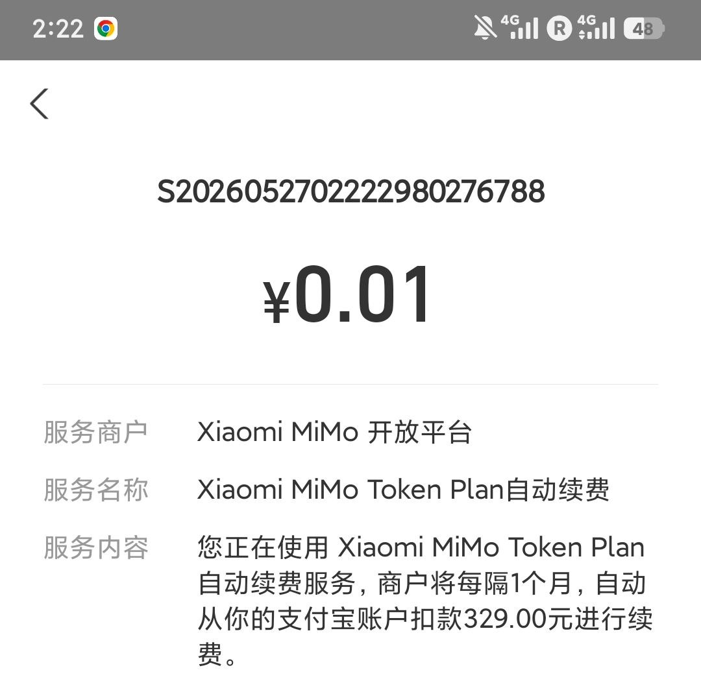
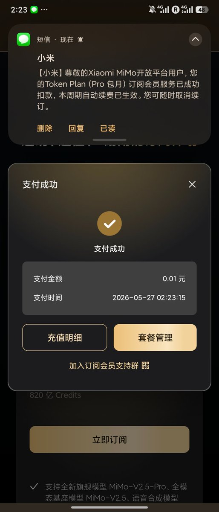
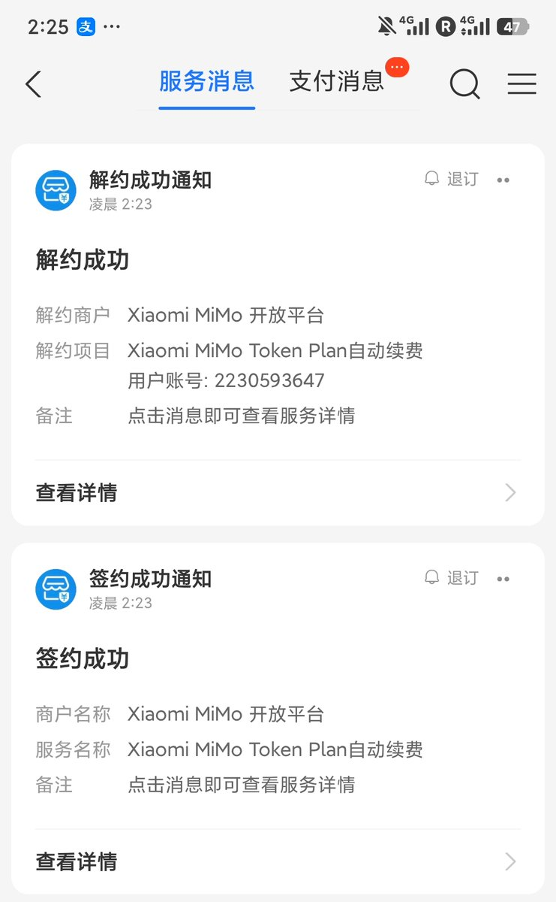

@yanbo2004 @XiaomiMiMo 0.01 续费首月，如果你想继续用的话




小米 MiMo 百万亿 Token 创造者激励计划套餐 0.01 元续费教程来啦！！！
在套餐管理启用「自动续费」后点击弹窗「前往订阅」，选择任一方式续订 Token Plan
我选的是支付宝，可以看到金额为 0.01 元，但次月为正常价格 https://t.co/Ach9dygRo7 https://t.co/voGHOla3kY
在套餐管理启用「自动续费」后点击弹窗「前往订阅」，选择任一方式续订 Token Plan
我选的是支付宝，可以看到金额为 0.01 元，但次月为正常价格 https://t.co/Ach9dygRo7 https://t.co/voGHOla3kY